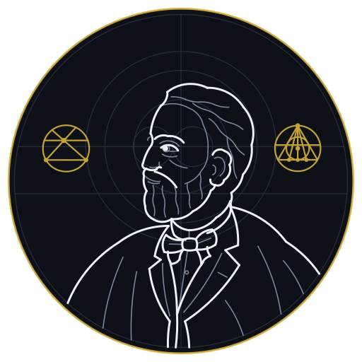

Felix Klein¶

Felix Klein (1849–1925) unified modern geometry around two transformative ideas: that every geometry is defined by the invariants of a continuous group of transformations, and that classical compass-and-straightedge constructibility reduces to towers of quadratic field extensions. This synchronized four-track German–English archive unites both his Famous Problems of Elementary Geometry (1895 / 1897) and The Erlangen Program (1872 / 1893) with calibrated vector diagrams and exact symbolic verifiers in geometor.klein.
Books in This Collection¶
First Editions · 1895 (Teubner) / tr. Beman & Smith 1897 · Parts I & II · 4 Tracks
Famous Problems of Elementary Geometry (Vorträge über ausgewählte Fragen der Elementargeometrie) — Klein’s Göttingen holiday lectures resolving cube duplication, angle trisection, Gauss’s constructible 17-gon (including Poncelet–Steiner single-circle construction), and Gordan’s transcendence proofs for $e$ and $\pi$.

Inaugural Monograph · 1872 (Erlangen) / tr. Haskell 1893 · §§ 1–10 & Notes · 4 Tracks
The Erlangen Program (Vergleichende Betrachtungen über neuere geometrische Forschungen) — Klein’s program classifying Euclidean, affine, projective, conformal (Möbius), Cayley–Klein non-Euclidean, and topological (analysis situs) geometries as invariant theories of transformation groups.
Key Features¶
Four-Track Bilingual Codices
Every section pairs the 1872/1895 German originals with the authorized English translations (Haskell 1893; Beman & Smith 1897), executive summaries, and mathematical notes.
Symbolic Cyclotomy & Group Invariants
The geometor.klein Python suite verifies Gauss–Wantzel constructibility, constructs the exact single-circle 17-gon over $K_{16}$, and checks Cayley–Klein cross-ratio additivity in SymPy.
Nine-Corpus Concordance & Lexicon
The Concordance links Klein’s theorems across Euclid, Kepler, Hilbert, Russell, Hoenen, Lemoine, Petersen, Pappus, and Wildberger, paired with 25 glossary entries.
Reference & Project¶
Scholarly Apparatus
Concordance & Glossary — Cross-corpus matrix and 25 algebraic/group-theoretic terms
People — Biographical profiles of 62 geometers, algebraists, and translators
Bibliography — 36 primary German/English editions and historical memoirs
About This Project
About — Scope, textual witnesses, and Klein’s algebraic-group synthesis
Using This Edition — Track switching and navigation guide
Log & Modules — Development notes and
geometor.kleinPython API